Presentation 01 · Oct 21, 2026 · GenslerPresentación 01 · 21 oct 2026 · Gensler01
From test fits to information models: what the tool does today, and what comes next.De test fits a modelos de información: lo que hace la herramienta hoy, y lo que sigue.
The cost of a test fitEl costo de un test fit01
A test fit takes a day in AutoCAD.1Un test fit toma un día en AutoCAD.1
8 h+by hand, in AutoCADa mano, en AutoCAD
— minin the app, to be measured2en la app, por medir2
≈200generated projects audited on every test runproyectos generados auditados en cada corrida de tests
1 · The author's estimate for one test fit drawn by hand. 2 · Measured in the baseline study (last slide), not guessed.1 · Estimación del autor para un test fit dibujado a mano. 2 · Se mide en el estudio de línea base (última slide), no se supone.
LineageLinaje01
Each tool built once is reused to build a better one.Cada herramienta que se hace una vez se reutiliza para construir una mejor.
Tool 1Herramienta 1
Plaza-Practiko
Resize one program and the parking count reacts: more pool, six stalls short; lengthen the lot and it is back in range.Cambias un programa y el conteo de cajones reacciona: más alberca, faltan seis; se alarga el estacionamiento y vuelve a estar en rango.
→
Tool 2Herramienta 2
MELI
Move a room and the app warns that access control must sit next to lockers; fix it, and the walking route is measured.Mueves un espacio y la app avisa que el control de acceso debe quedar junto a los lockers; lo corriges y se mide la ruta a pie.
→
In developmentEn desarrolloTodayHoy
One core for many building types, so the next tool is not built from zero.Un núcleo para muchas tipologías, para que la siguiente herramienta no se haga desde cero.
Silent loops of each tool's own example data, as labelled in the clips.Bucles sin audio con los datos de ejemplo de cada herramienta, como se indica en los clips.
What the app doesQué hace la app01
One project, every step: from the site to the hand-off.Un proyecto, cada paso: del sitio a la entrega.
Gates, docks, truck courtsAccesos, andenes, patios de maniobras
Roads and parkingVialidades y estacionamiento
06
AnalysisAnálisis
KPIs on every editKPIs en cada cambio
Code rules, routes, fire accessNormativa, rutas, acceso de bomberos
OptimizerOptimizadormulti-objective: searches variants of the masses and keeps the best as optionsmultiobjetivo: busca variantes de las masas y conserva las mejores como opciones
Issues · ▶ Solveevery conflict in one list, fixed one by one or all at oncecada conflicto en una lista, que se corrige uno por uno o todos a la vez
Agent · MCPevery action as a tool, for an agent inside the app or outside itcada acción como herramienta, para un agente dentro o fuera de la app
Hand-offEntrega
Rhino (.3dm)
PDF plansPlanos PDF
Slides (.pptx)Láminas (.pptx)
Live linkEnlace en vivo
IFC (BIM)
● built · ◐ next · ○ later● hecho · ◐ sigue · ○ después
Intentions · the question beside itIntenciones · la pregunta que la acompaña01
The tool, and the question that runs beside it.La herramienta, y la pregunta que corre a la par.
IntentionsIntenciones
A test fit in minutes, not a dayUn test fit en minutos, no en un díathe 8+ hours by hand, automated, with every option comparablelas 8+ horas a mano, automatizadas, con cada opción comparable
A model that carries informationUn modelo que carga informacióngeometry with data, so rules can check it and others can reuse itgeometría con datos, para que las reglas la revisen y otros la reutilicen
Learn from every projectAprender de cada proyectowhat the tool proposes, against what people keeplo que la herramienta propone, frente a lo que la gente conserva
The dilemma · the thesis questionEl dilema · la pregunta de tesis
How many hands does a model pass through, from concept to production?¿Por cuántas manos pasa un modelo, del concepto a producción?
DesignerDiseñador
Senior
ClientCliente
EngineersIngenieros
ContractorContratista
And does the number change with…¿Y cambia el número según…?
Prediction · hands the tool removesPredicción · manos que quita la herramienta
IndustrialIndustrial
OfficesOficinas
A hand is a person who redraws or re-checks part of the model. The bars are a prediction to test in the baseline study (last slide), not data.Una mano es una persona que redibuja o revisa parte del modelo. Las barras son una predicción por probar en el estudio de línea base (última slide), no datos.
Step by stepPaso a paso01
Setting up a project: site, brief, rules, design.Armar un proyecto: sitio, brief, reglas, diseño.
1
SiteSitio
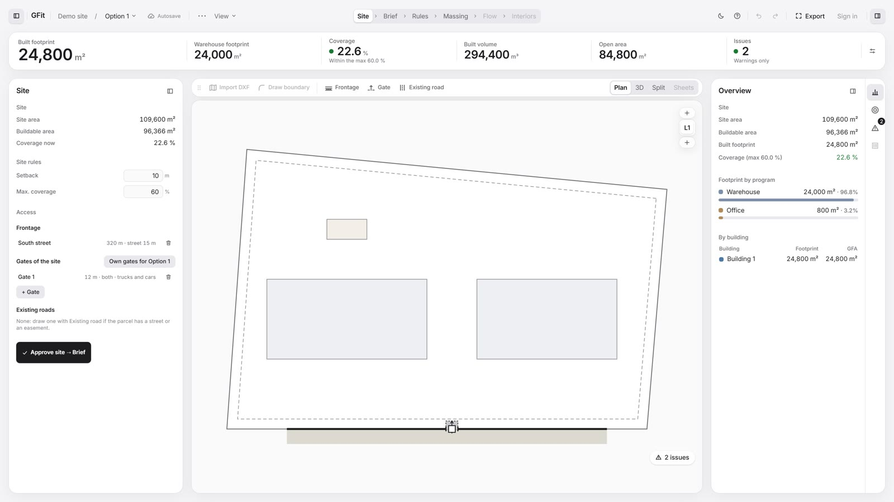
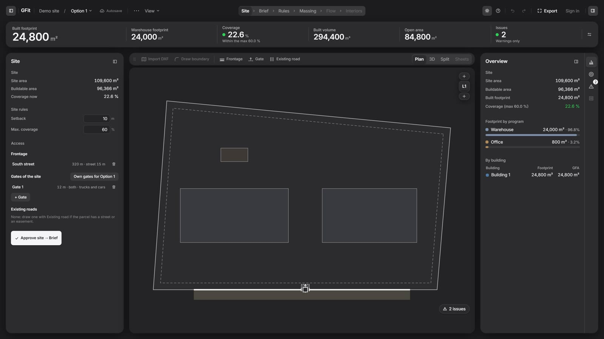
The parcel and its limits: setback, maximum coverage, frontage and gates.El predio y sus límites: retiro, cobertura máxima, frente y accesos.
2
Brief
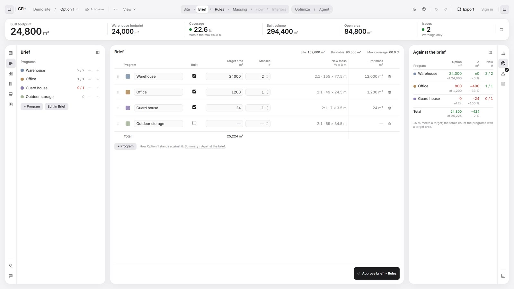
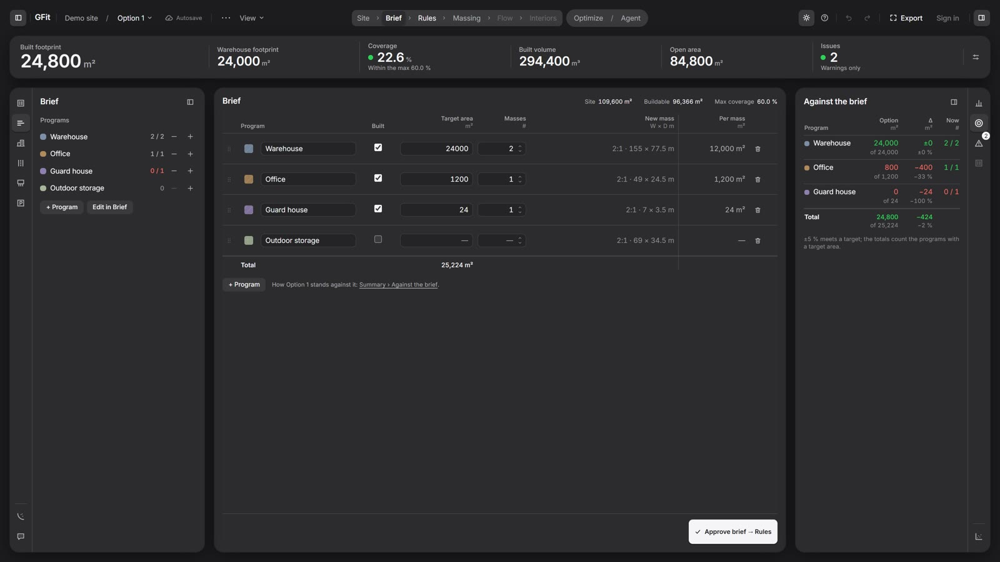
What to build: each program with its target area and how many masses.Qué construir: cada programa con su área objetivo y cuántas masas.
3
RulesReglas
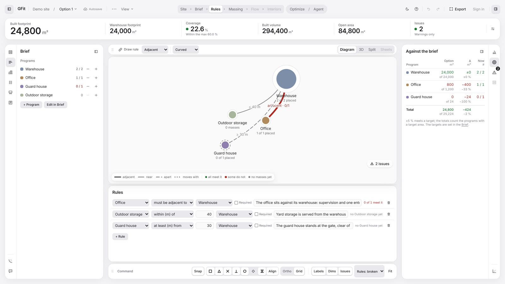
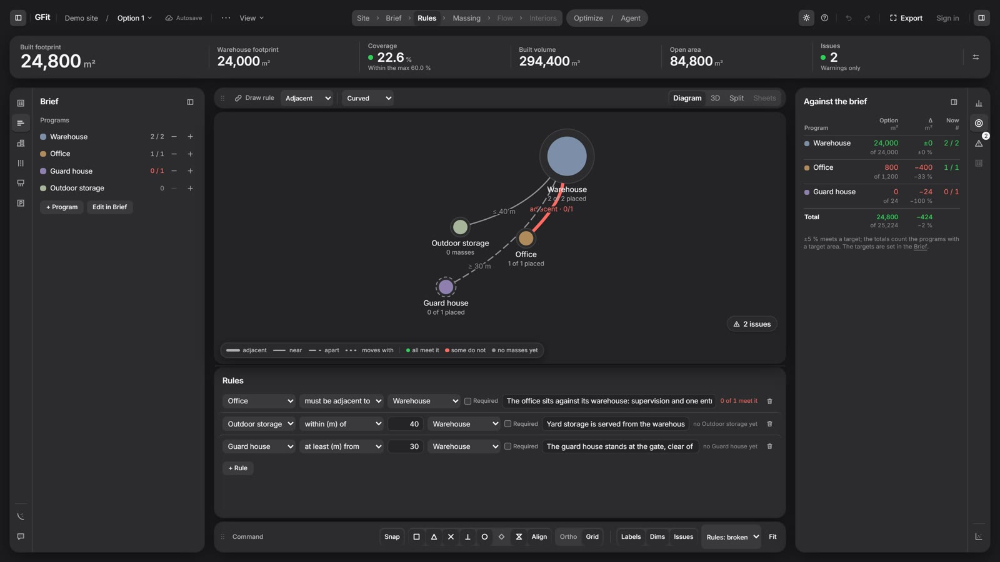
How programs relate: the office next to its warehouse, the yard within 40 m.Cómo se relacionan los programas: la oficina junto a su nave, el patio a menos de 40 m.
4
DesignDiseño
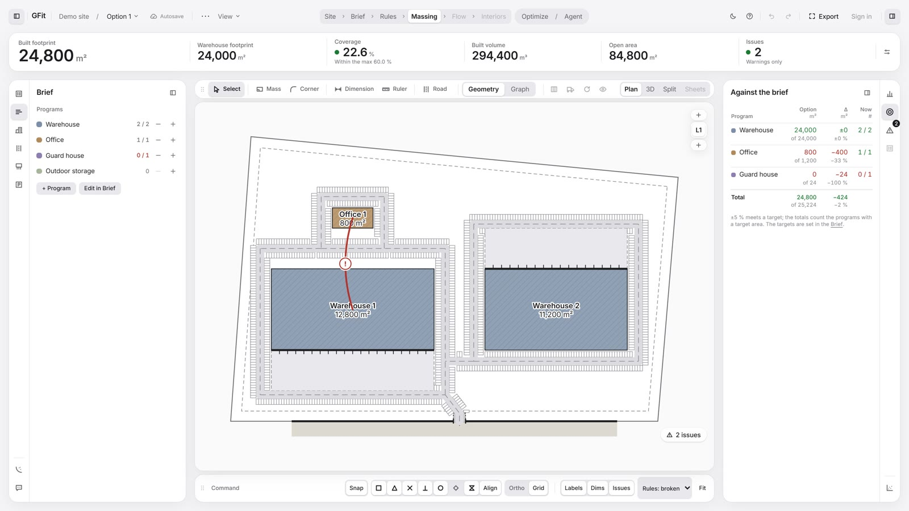
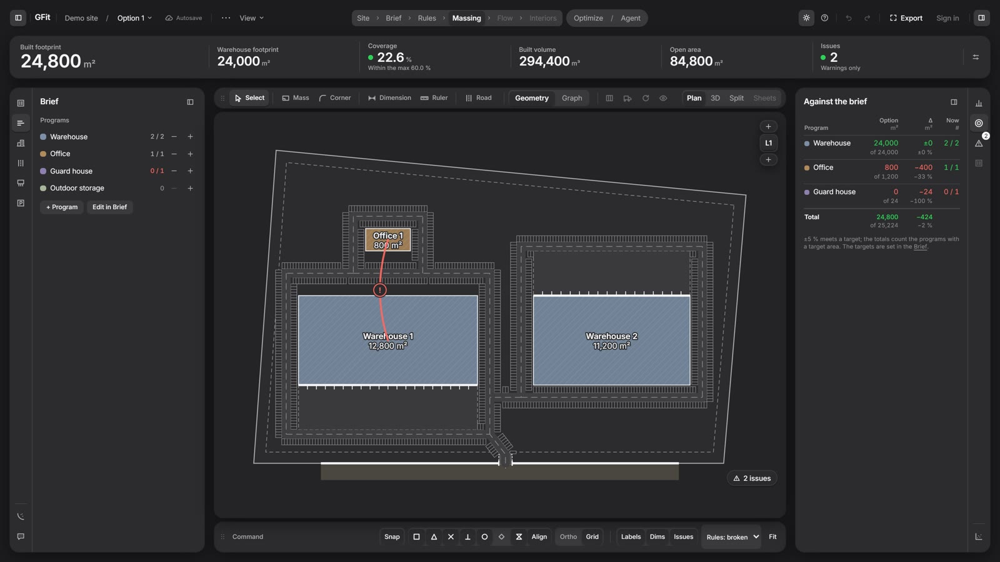
Masses, levels and options; roads, docks and parking follow the masses.Masas, niveles y opciones; vialidades, andenes y estacionamiento siguen a las masas.
Every step edits one project: change the brief and everything downstream follows. Demo site.Cada paso edita un solo proyecto: cambia el brief y todo lo que sigue se actualiza. Sitio de demostración.
Rules while designingReglas al diseñar01
Rules follow you while you design, and can fix themselves.Las reglas te siguen mientras diseñas, y pueden corregirse solas.
1
The rule is drawn on the massesLa regla se dibuja sobre las masas
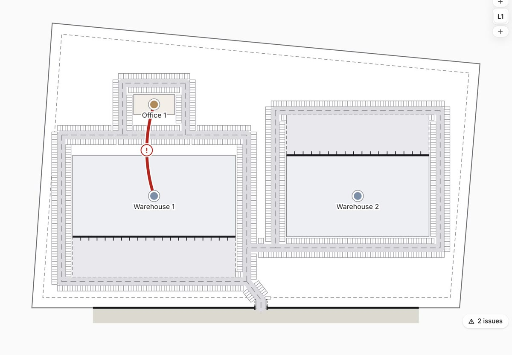
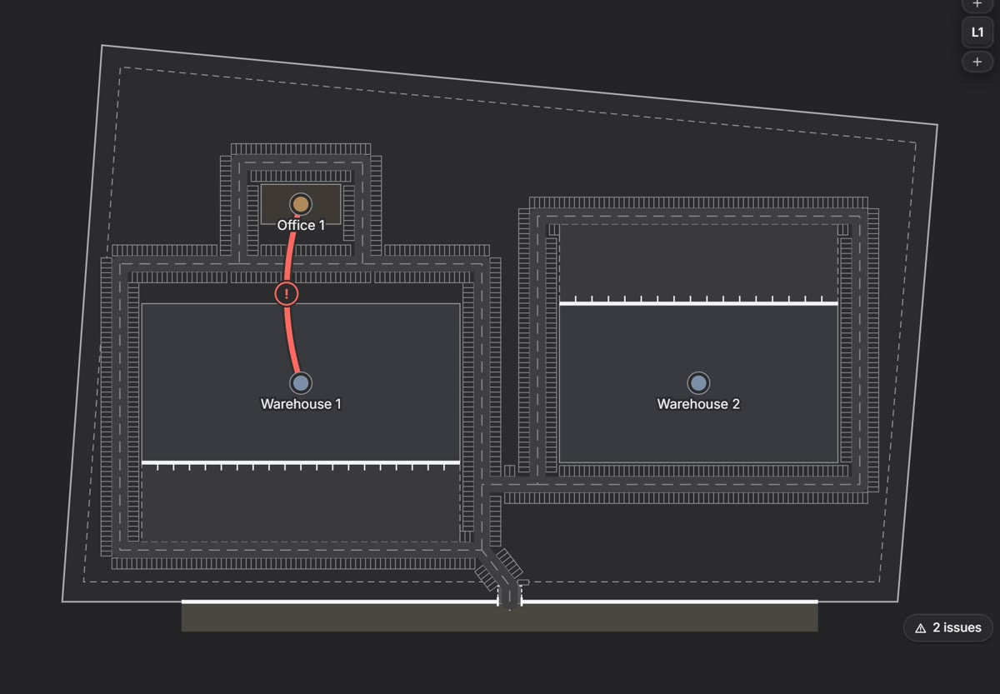
A broken rule shows in red with a mark where it fails: the office must touch its warehouse and does not.Una regla rota se ve en rojo con una marca donde falla: la oficina debe tocar su nave y no lo hace.
2
Every break is listed, with its fixCada falla está en una lista, con su arreglo
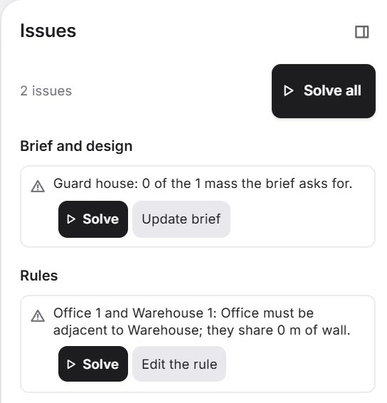
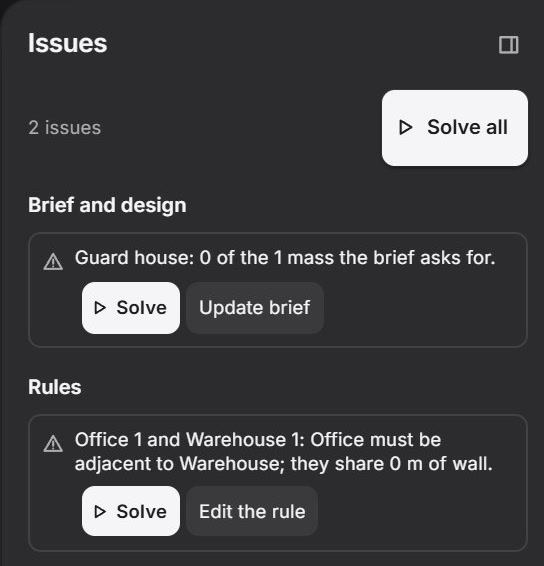
▶ Solve fixes one issue; ▶ Solve all fixes every one it can. Or edit the rule itself.▶ Solve corrige un problema; ▶ Solve all corrige todos los que puede. O edita la regla.
3
The smaller mass moves to meet itLa masa más chica se mueve para cumplirla
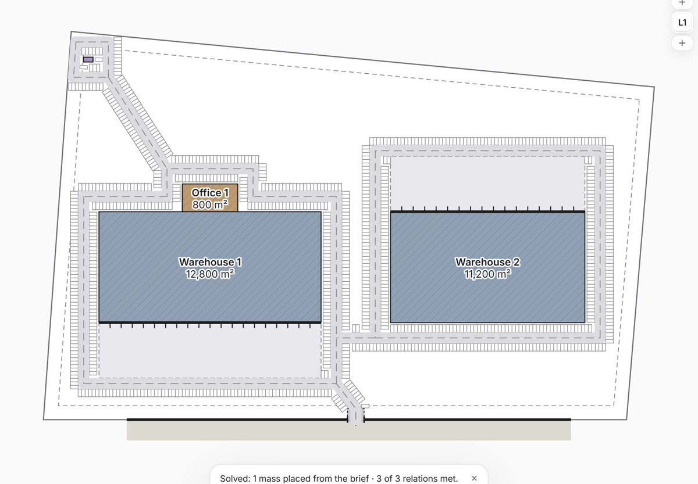
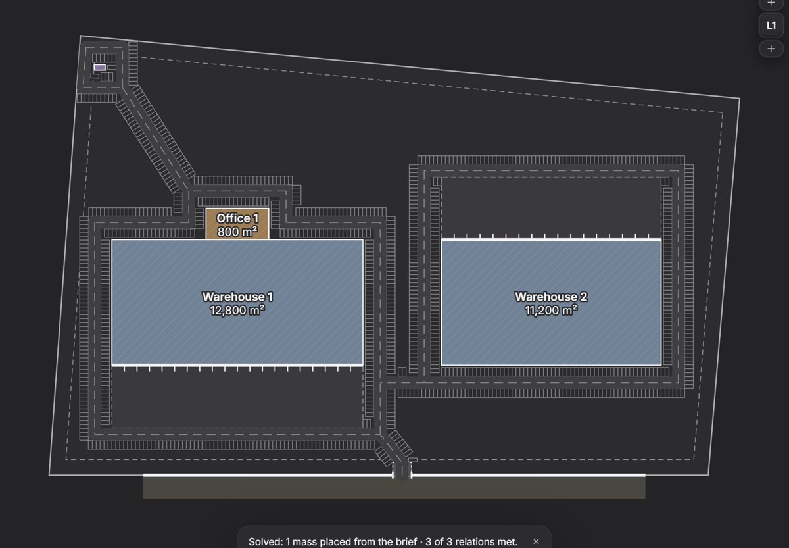
The office slides against the warehouse and the missing guard house is placed: 3 of 3 relations met, in one undo step.La oficina se pega a la nave y se coloca la caseta que faltaba: 3 de 3 relaciones cumplidas, en un solo paso de deshacer.
The larger mass anchors the layout; what Solve cannot place is reported, not hidden. Demo site.La masa más grande ancla el layout; lo que Solve no logra colocar se reporta, no se esconde. Sitio de demostración.
Two kinds of rulesDos tipos de reglas01
What we want, and what we got.Lo que queremos, y lo que obtuvimos.
Design rules · doneReglas de diseño · hechoWhat we wantLo que queremosoffice next to warehouseoficina junto a la nave
The planEl planMasses, roads, docksMasas, vialidades, andenesone project, every stepun proyecto, cada paso
Code rules · phase 6Reglas de normativa · fase 6What we gotLo que obtuvimosegress, fire access, road widthsevacuación, bomberos, anchos de vialidad
checked on every edit: more passes, but shorterse revisa en cada cambio: más pasadas, pero más cortas
Scope for now: up to the rule-checked layout.Alcance por ahora: hasta el layout revisado por reglas.
KPIsKPIs01
What the app measures, and what the numbers can feed.Lo que la app mide, y lo que esos números pueden alimentar.
Measured today, on every editSe mide hoy, en cada cambio
AreaÁrea
site · buildable · footprint · coverage · open areasitio · edificable · huella · cobertura · área libre
BuildingEdificio
floor area (GFA) · volume · buildings · massesárea construida · volumen · edificios · masas
ProgramPrograma
area against the brief, per programárea frente al brief, por programa
LogisticsLogística
dock doors · truck courts · roads · car stallsandenes · patios de maniobras · vialidades · cajones
HealthSalud
issues: the rules met or brokenproblemas: reglas cumplidas o rotas
Coming with AnalysisVienen con Análisis
route length and time · clearance gaps · fire-access reach · egress distance · what the gate seeslongitud y tiempo de rutas · holguras · alcance de bomberos · distancia de evacuación · lo que ve el acceso
→
What they can feedQué pueden alimentar
Pro formaPro formaland, build cost, rents, occupancy → investment, income, yieldterreno, costo de obra, rentas, ocupación → inversión, ingreso, rendimiento
Construction timeTiempo de obraduration from floor area, volume and levelsduración a partir de área, volumen y niveles
Quantities and costCantidades y costopaving, floor area, volume × the client's unit pricespavimento, área, volumen × los precios unitarios del cliente
Code and permitsNormativa y permisoscoverage and limits checked today; egress and fire nextcobertura y límites revisados hoy; evacuación y bomberos después
OperationsOperacióntruck turnaround and walking times, from the routesgiro de camiones y tiempos a pie, a partir de las rutas
Compare optionsComparar opcionesside by side today; whole portfolios laterlado a lado hoy; portafolios completos después
The optimizerEl optimizadorany KPI can be a goal or a limitcualquier KPI puede ser una meta o un límite
The client's own formulaLa fórmula propia del clientea KPI is a figure and a formula: new ones plug inun KPI es una cifra y una fórmula: los nuevos se conectan
● exists · ◐ next · ○ a possibility, not yet planned in detail● existe · ◐ sigue · ○ una posibilidad, aún sin plan detallado
Where it stands · what comes firstDónde está · lo primero que sigue01
Where it stands, and what comes first.Dónde está, y qué viene primero.
DoneHecho
Site → Brief → Rules → MassingSitio → Brief → Reglas → Masas
Pro forma, versions, portfolioPro forma, versiones, portafolio
Sheets, .pptx, IFCLáminas, .pptx, IFC
Offices (CAF)Oficinas (CAF)
Team library on AzureBiblioteca de equipo en Azure
Right away · evaluating the appDe inmediato · evaluar la app
To know whether it is valid, where it saves hands and time, and what to build next.Para saber si es válida, dónde ahorra manos y tiempo, y qué construir después.
01BaselineLínea basetime and hands of 1–2 real test fits by handtiempo y manos de 1–2 test fits reales a mano
02Target usersUsuarios meta3–5 roles, in their own steps3–5 roles, con sus propios pasos
03Same task in the appLa misma tarea en la apphands, passes and time, step by stepmanos, pasadas y tiempo, paso a paso
04ValidityValidezdo its rule checks agree with a designer's review?¿sus revisiones de reglas coinciden con la de un diseñador?
05Feedbackwhat people correct becomes the next ruleslo que la gente corrige se vuelve las próximas reglas